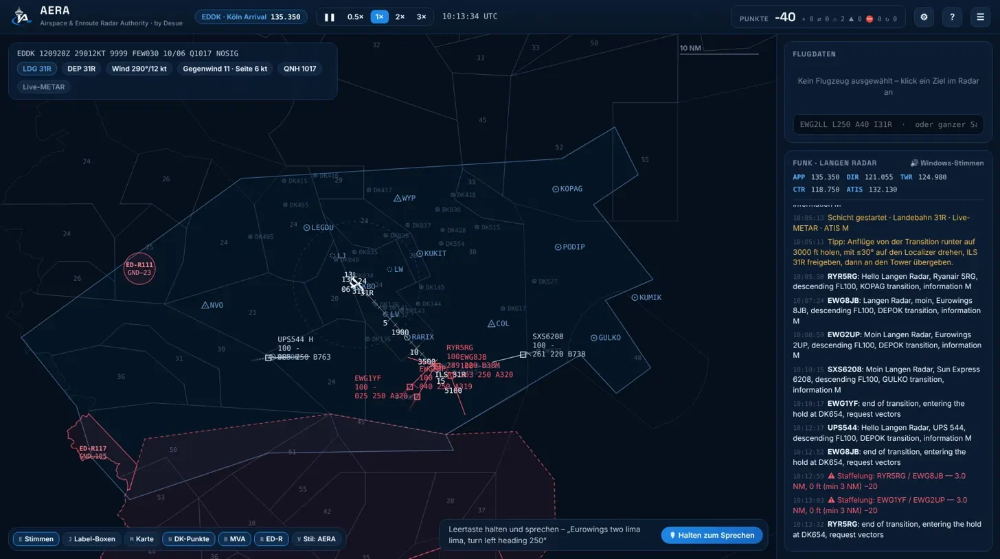
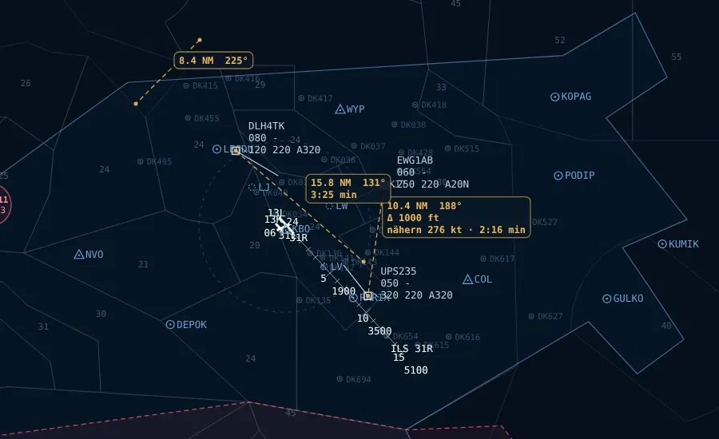

EDDK Köln/Bonn
Köln Arrival
- RWY 13L/31R · 06/24
- Fracht-Drehkreuz mit vielen Heavies
- Cargo-Nacht als härteste Verkehrsstufe
GNDFL100
Control the Skies
Anflug- und Streckenkontrolle über Deutschland. Echte Fixes, echte Airlines, Live-Wetter – und Piloten, die dir auf Deutsch oder Englisch antworten.

Deine Arbeitsplätze
Zwei Flughäfen im Anflug, zwei Radar-Sektoren auf der Strecke. Jeder spielt sich anders – vom engen ILS-Fädeln bis zur Übergabe an den Nachbarsektor.
Köln Arrival
Frankfurt Approach North
Gießen/Taunus
Frankfurt · Upper
Features
Leertaste halten und die Freigabe einfach sagen. AERA versteht Funksprech – und die Piloten lesen zurück, auf Deutsch oder Englisch.
„Eurowings two lima lima, turn left heading 250“
␣ LeertasteKurzbefehle für Profis, Buttons im Flugdaten-Panel für alle anderen.
EWG2LL L250 A40 I31REchtes METAR bestimmt die Landebahn. Gegenwind, Seitenwind und QNH stehen immer im Blick.
Reale Fixes, RNAV-Punkte und Airways, Mindestradarhöhen (MVA) und Sperrgebiete (ED-R) – alles einzeln ein- und ausblendbar.
Abstand, Kurs und Annäherung zwischen zwei Zielen direkt auf dem Radar – inklusive Zeit bis zum Konflikt.

Vom Eurowings-A320 über die UPS-763 bis zum Emirates-A388 – mit passenden Rufzeichen.
Saubere Übergaben bringen Punkte. Staffelungsunterschreitung oder ein Flieger, der ohne Übergabe den Sektor verlässt, kosten welche.
Verkehr von „Light“ bis zur Cargo-Nacht, optionale Abflüge über SIDs, Zeitraffer bis 3×.
Auf der Frequenz
Piloten melden sich mit Transition und ATIS-Kennung, fragen nach Vektoren, wenn sie ins Holding müssen – und du hältst den Laden zusammen. Alle Stimmen gibt es auf Deutsch und Englisch.
Screenshots
Roadmap
AERA ist im Early Access und wächst Stück für Stück. Die Pläne können sich ändern – Feedback entscheidet mit.
AERA ist noch in Entwicklung. Du willst früh mitspielen? Frag die Beta an – ich melde mich per Mail, sobald ein Platz frei ist.
FAQ
Nein. Starte mit wenig Verkehr – AERA gibt dir zu Schichtbeginn Tipps, wie du die Anflüge auf den Localizer bekommst.
Nein. Sprechen ist optional – alles geht auch per Befehlszeile oder mit den Buttons im Flugdaten-Panel.
Ja – Oberfläche, Funk und Pilotenstimmen gibt es in beiden Sprachen.
Fixes, Airways, Frequenzen und Airlines sind an die echte Welt angelehnt, das Wetter kommt live als METAR. AERA ist trotzdem ein Spiel – bitte nicht für echte Navigation verwenden.
AERA ist im Early Access und noch in Entwicklung. Über „Beta anfragen“ kannst du dich für die Beta melden – ich schreibe dir dann per Mail.
Nein. AERA ist ein privates Hobbyprojekt von Desue und steht in keiner Verbindung zur DFS, zu EUROCONTROL oder zu den gezeigten Airlines.